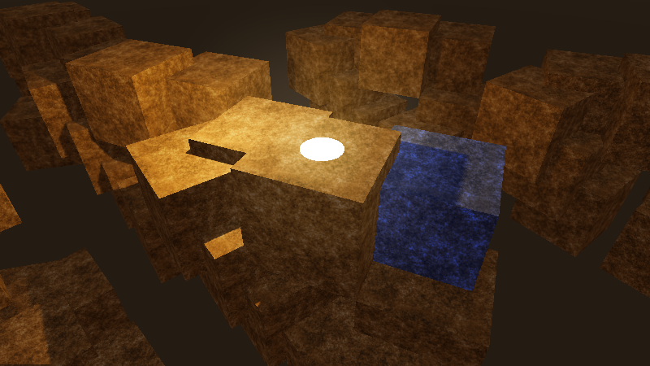
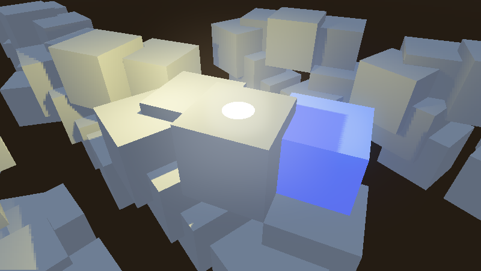

Variable rate shading
What is variable rate shading?
In modern 3D rendering engines, shaders are much more complex compared to before. The advent of physically-based rendering, real-time global illumination and screen-space effects has increased the number of per-pixel shading that must be performed to render each frame. Additionally, screen resolutions also have increased a lot, with 1440p and 4K now being common target resolutions. As a result, the total shading cost in scene rendering usually represents a significant amount of the time taken to render each frame.
Variable rate shading (VRS) is a method of decreasing this shading cost by reducing the resolution of per-pixel shading (also called fragment shading), while keeping the original resolution for rendering geometry. This means geometry edges remain as sharp as they would without VRS. VRS can be combined with any 3D antialiasing technique (MSAA, FXAA, TAA, SSAA).
VRS allows specifying the shading quality in a local manner, which makes it possible to have certain parts of the viewport receive more detailed shading than others. This is particularly useful in virtual reality (VR) to achieve foveated rendering, where the center of the viewport is more detailed than the edges.
Here's a scene rendered with rate shading disabled then enabled, using the density map linked at the bottom of this page:

Variable rate shading disabled in textured scene

Variable rate shading enabled in textured scene (lower quality, but higher performance)
When used in scenes with low-frequency detail (such as scenes with a stylized/low-poly aesthetic), it's possible to achieve similar performance gains, but with less reduction in visual quality:
Variable rate shading disabled in untextured scene

Variable rate shading enabled in untextured scene (lower quality, but higher performance)
Hardware support
Variable rate shading is only supported on specific GPUs:
Desktop:
NVIDIA Turing and newer (including GTX 1600 series)
AMD RDNA2 and newer (both integrated and dedicated GPUs – including Steam Deck)
Intel Arc Alchemist and newer (dedicated GPUs only)
Intel integrated graphics do not support variable rate shading.
Mobile SoCs:
Snapdragon 888 and newer
MediaTek Dimensity 9000 and newer
ARM Mali-G615 and newer
As of January 2023, Apple and Raspberry Pi GPUs do not support variable rate shading.
Using variable rate shading in Godot
Note
Both Forward+ and Mobile renderers support variable rate shading. VRS can be used in both pancake (non-XR) and XR display modes.
The Compatibility renderer does not support variable rate shading. For XR, you can use foveation level as an alternative.
In the advanced Project Settings, the Rendering > VRS section offers settings to control variable rate shading on the root viewport:
Mode: Controls the variable rate shading mode. Disabled disables variable rate shading. Texture uses a manually authored texture to set shading density (see the property below). XR automatically generates a texture suited for foveated rendering in virtual/augmented reality.
Texture: The texture to use to control shading density on the root viewport. Only used if Mode is Texture.
For custom viewports, the VRS mode and texture must be set manually to the Viewport node.
Note
On unsupported hardware, there is no visual difference when variable rate
shading is enabled. You can check whether hardware supports variable rate
shading by running the editor or project with the --verbose
command line argument.
Creating a VRS density map
If using the Texture VRS mode, you must set a texture to be used as a density map. Otherwise, no effect will be visible.
You can create your own VRS density map manually using an image editor, or generate it using another method (e.g. on the CPU using the Image class, or on the GPU using a shader). However, beware of performance implications when generating a VRS image dynamically. If opting for dynamic generation, make sure the VRS image generation process is fast enough to avoid outweighing the performance gains from VRS.
The texture must follow these rules:
The texture must use a lossless compression format so that colors can be matched precisely.
The following VRS densities are mapped to various colors, with brighter colors representing a lower level of shading precision:
Density |
Color |
Comment |
|---|---|---|
1×1 (highest detail) |
|
|
1×2 |
|
|
2×1 |
|
|
2×2 |
|
|
2×4 |
|
|
4×2 |
|
|
4×4 |
|
|
4×8 |
|
Not supported on most hardware. |
8×4 |
|
Not supported on most hardware. |
8×8 (lowest detail) |
|
Not supported on most hardware. |
For example, this VRS density texture provides the highest shading density in the center of the viewport, and the lowest shading density in the corners:
Example VRS density map texture, simulating foveated rendering
There are no size or aspect ratio requirements for the VRS density texture.
However, there is no benefit to using a VRS density map that is larger than the
viewport resolution divided by the GPU's tile size. The tile size is what
determines the smallest area of pixels where the shading density can be changed
separately from other tiles. On most GPUs, this tile size is 8×8 pixels. You can
view the tile size by running Godot with the --verbose command line
argument, as it's printed in the VRS debugging information.
Therefore, sticking to a relatively low resolution such as 256×256 (square) or 480×270 (16:9) is recommended. Depending on your use cases, a square texture may be more suited compared to a texture that matches the most common viewport aspect ratio in your project (such as 16:9).
Tip
When using variable rate shading, you can use a negative texture mipmap LOD bias to reduce blurriness in areas with reduced shading rate.
Note that the texture LOD bias is set globally, so this will also affect areas of the viewport with full shading rate. Don't use values that are too low, or textures will appear grainy.
Performance comparison
To give an idea of how much VRS can improve performance in theory, here's a performance comparison with the textured example scene shown at the top of this page. The VRS density map example present on this page is used.
Results were captured on a GeForce RTX 4090 with the NVIDIA 525.60.11 driver.
Resolution |
VRS disabled |
VRS enabled |
Performance improvement |
|---|---|---|---|
1920×1080 (Full HD) |
2832 FPS |
3136 FPS |
+10.7% |
2560×1440 (QHD) |
2008 FPS |
2256 FPS |
+12.3% |
3840×2160 (4K) |
1236 FPS |
1436 FPS |
+16.2% |
7680×4320 (8K) |
384 FPS |
473 FPS |
+23.1% |
In terms of performance improvements, variable rate shading is more beneficial at higher target resolutions. The reduction in visual quality is also less noticeable at high resolutions.
Note
For non-VR games, you will probably have to use a less aggressive VRS texture than what was used in this example. As a result, the effective performance gains will be lower.